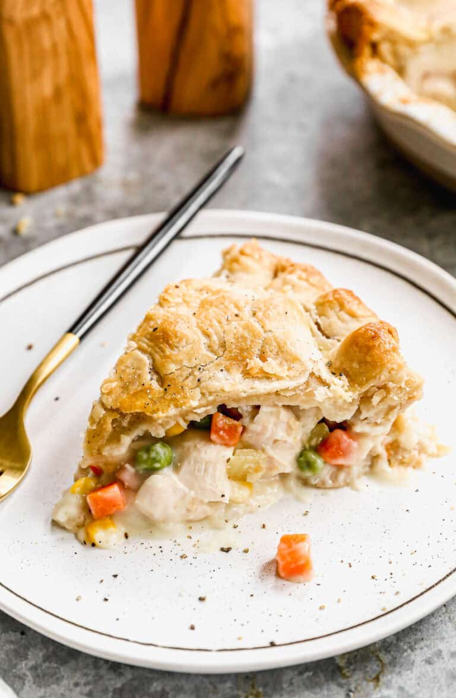

Home
Chicken Pot Pie

Description
Easy to make raditional chicken pot pie with flaky pie crust and creamy chicken and vegetable filling.
Prep Time
30 mins
Cook Time
1 hr
Total Time
1 hr 30 mins
Servings
8 servings
Ingredients List
- 2 pie crusts (one for top and bottome)
- 1 pound boneless skinless chicken breasts
- 1/3 cup butter
- 1/2 cup celery, sliced
- 1/3 cup onion, chopped
- 1/3 cup all-purpose flour
- 1/2 teaspoon salt
- 1/4 teaspoon freshly ground black pepper
- 1/4 teaspoon celery seed
- 1 teaspoon chicken bouillon paste, or more to taste (or substitute 1 bouillon cube)
- 1 cup milk
- 8 ounces frozen veggies, (mix of carrots, peas, green beans, and corn)
- 1 egg
- 1 tablespoon milk
Instructions
- Cook Chicken: Season chicken with salt and pepper. Add chicken to a large saucepan and cover it with water. Bring it to a simmer and cook until it's just barely cooked through then remove the chicken to a plate. Allow it to cool for a few minutes before chopping into bite-size pieces. Reserve about 1 3/4 cups of the water in a measyring cup, and discard the rest.
- Chicken Pot Pie Filling: Add onions, celery and butter to the saucepan and cook for a few minutes until soft and translucent. Stir in the flour, salt, pepper, garlic powder, bullion paste and celery seed. Slowly stir in the reserved water and milk. Simmer over medium-low heat until thick.
- Add chopped chicken and frozen vegetables. Taste and season with more salt, peper, bouillon or garlic powder if needed. Allow mixture to cool (so that's it's not hot when poured into the pie crust).
- Preheat oven to 425 degrees F.
- Roll out bottom pie crust: Remove one pie dough from the fridge and place on lightly floured counter. Use a rolling pin to roll dough into a large circle, about 12 inches in diameter. Place in 9 inch pie pan.
- Assemble: Add cooled chicken pot pie filling. Roll out second pie crust and place over the top of the filling. Seal edges of the two crusts together and crimp them, if desired. Use a sharp knife to make a small slit in the top pie crust to allow steam to escape.
- Egg wash: Whisk 1 egg with 1 tablespoon milk and brush a very thin layer over the top pie crust before baking.
- Bake for 40-50 minutes, or until the top crust is golden brown and filling is bubbly. If you find the pie crust is browning too quickly, cover it with a piece of aluminum foil.
- Rest and serve: Allow chicken pot pie to cool for at least 15-20 minutes before serving, to allow it to set up.
Notes
Make Ahead Instructions: The chicken filling, and pie crust, can be made a day or two in advance, stored separately in the fridge, or the whole chicken pot pie could be assembled one day in advance before baking.
Freezing Instructions: You can freeze chicken pot pie before or after baking. Cover well with aluminum foil and freeze for up to 3 months. Thaw completely overnight in the refrigerator then bake as directed.